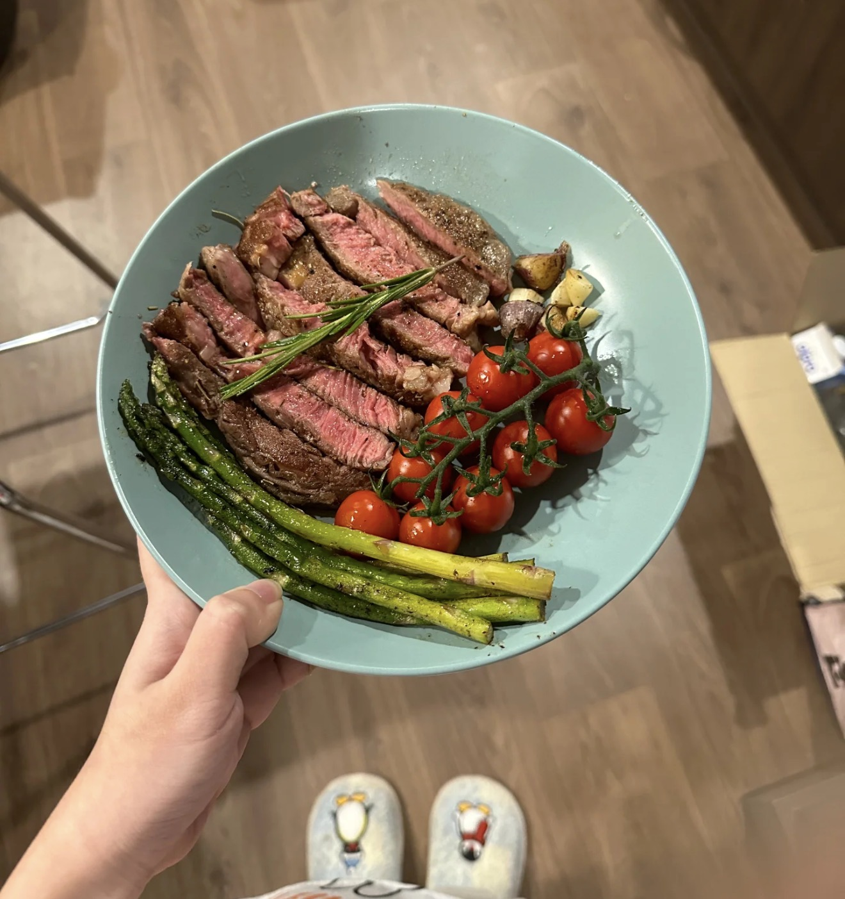
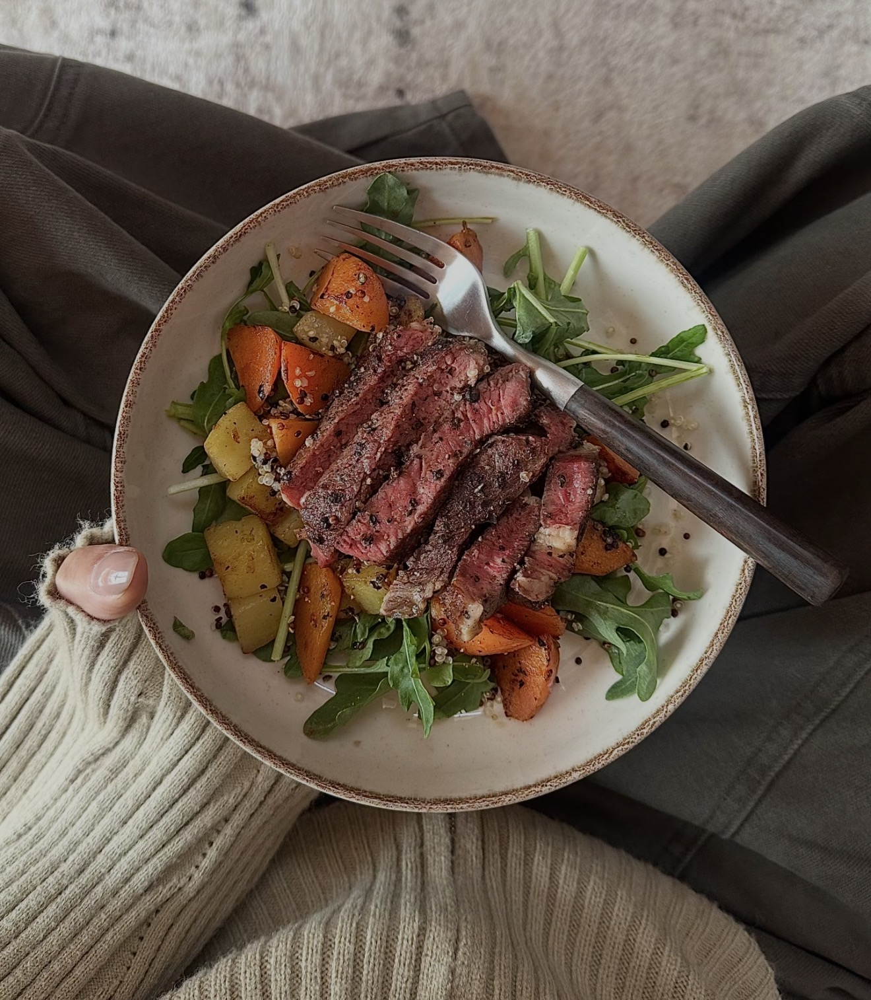

Argentine Steak
阿根廷香煎牛排 — Juicy pan-seared steak served with fresh garnish and rich flavor.
Ingredients
- Steak (ribeye or sirloin)
- Salt
- Black pepper
- Butter
- Garlic
- Olive oil
- Cherry tomatoes
- Optional vegetables
Directions
- Let steak rest at room temperature for 30 minutes.
- Season both sides with salt and pepper.
- Heat pan until very hot, add oil.
- Sear steak for 2–3 minutes per side.
- Add butter and garlic, baste continuously.
- Cook to desired doneness.
- Rest steak before slicing.
- Serve with vegetables and garnish.